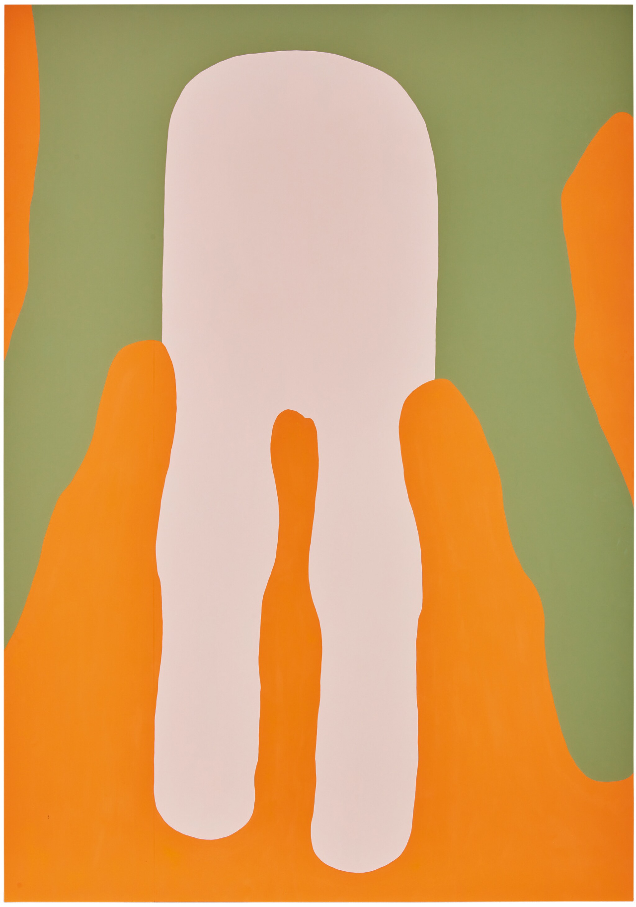
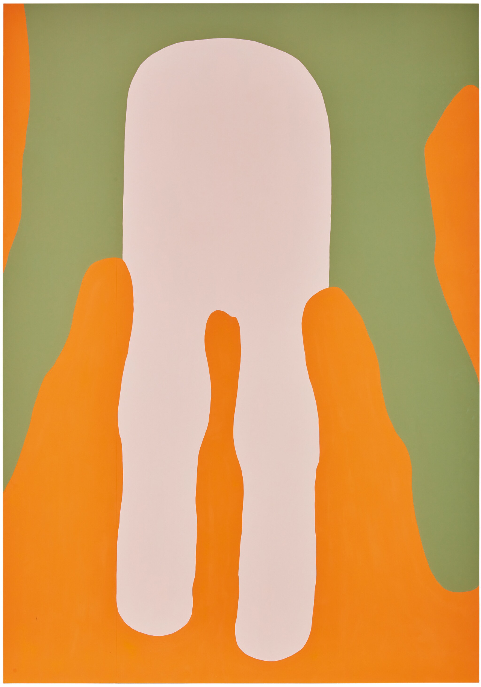

In 2019, when the artist Gary Hume was having a show in New York, he asked his gallery, Matthew Marks, to ship his work from London by sea rather than fly it by air. He also asked the environmentalist Danny Chivers to write a report on the journey. Hume wanted to know what impact shipping his work would have on the journey’s carbon emissions. It took 13 days for his work to arrive by boat to New York from London, 12 and a half days longer than the usual plane ride. Chivers’s report, published in partnership with logistics company Cadogan Tate, revealed that the carbon footprint created by moving the artworks by sea was 96 percent lower than if they’d been flown by plane, creating 24 metric tonnes of greenhouse gas savings. Was it worth it? Significantly. It also saved a good deal of money. As a gallerist who moves a significant amount of art around the world in a normal year, I was intrigued. It took 13 days for his work to arrive by boat to New York from London, 12 and a half days longer than the usual plane ride. Chivers’s report, published in partnership with logistics company Cadogan Tate, revealed that the carbon footprint created by moving the artworks by sea was 96 percent lower than if they’d been flown by plane, creating 24 metric tonnes of greenhouse gas savings. Was it worth it? Significantly. It also saved a good deal of money. As a gallerist who moves a significant amount of art around the world in a normal year, I was intrigued. “I can’t claim to be an environmental activist,” Hume said when I rang him. “I’m more like ten percent activist. But I think there are lots of us who are ten percent activists, and if you put a lot of ten percents together it begins to add up.” This resonated deeply, because I felt like I was also a ten percent activist, and for the first time I realized how unhelpful it was to ignore the potential of that ten percent. Then, in Danny Chivers’s book, The No-Nonsense Guide to Climate Change, I read his number one tip on what each of us can do to help with climate change. “Build a movement,” Chivers writes. “We need as many people as possible to get involved, clued up and active. Think about what you can do to spread the word. Could you arrange a meeting or event at your workplace or in your community?” A meeting or event? The art world specializes in these. Suddenly, doing something seemed eminently possible. I knew I wasn’t alone in this. The directors of Frieze, Matthew Slotover and Victoria Siddall, had long since commissioned a green report and were working hard to lower the art fair’s environmental impact, as was Kate MacGarry at her gallery, and others too. Greg Hilty, Sadie Coles, and Peter Chater were all keen to discuss what we might do if we worked together as a community and industry to lower our carbon emissions, and the idea of a climate coalition for the commercial art world was born.